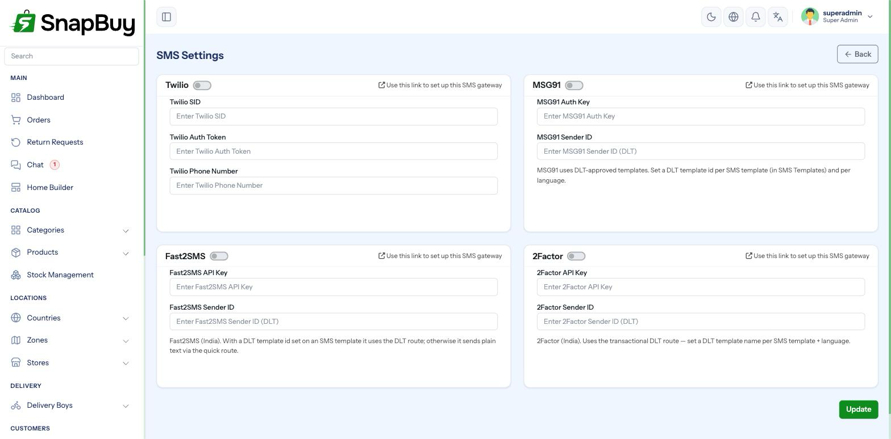

SMS Settings
Menu path: Settings → SMS Settings
Configures the SMS gateway used to send OTPs and transactional messages, as an alternative to Firebase phone authentication.

When you need this
| Situation | SMS gateway needed? |
|---|---|
| Phone login using Firebase Authentication | No |
| Phone login with Custom SMS Gateway (OTP based) | Yes |
| Sending transactional SMS (order updates) | Yes |
Configure this before switching off Firebase Authentication
Login Settings requires either Firebase auth or a custom SMS gateway when phone login is enabled. Disabling Firebase without a working gateway here stops phone login instantly for every customer.
Order of operations: configure and test SMS here first, then switch the login method.
Supported providers
Twilio
Global coverage, pay per message.
| Field | Where to find it |
|---|---|
| Twilio SID | Twilio Console → Account SID |
| Twilio Auth Token | Twilio Console → Auth Token |
| Twilio Phone Number | A number you have purchased, in E.164 format — +15551234567 |
Twilio trial accounts only message verified numbers
On a trial account, SMS is delivered only to numbers you have verified in the console, and every message carries a trial prefix. Upgrade before launch, or real customers receive nothing.
Sending to India via Twilio needs DLT registration
Indian regulations require sender IDs and templates to be pre-registered on a DLT platform. Unregistered traffic is dropped by the carrier — Twilio reports success, the customer receives nothing. If your market is India, a local provider is usually less friction.
2Factor
India-focused, generally cheaper and more reliable for Indian numbers.
| Field | Where to find it |
|---|---|
| 2Factor API Key | 2Factor dashboard → API Key |
| 2Factor Sender ID | Your approved 6-character sender ID — SNPBUY |
Sender IDs need approval
Sender IDs are approved by the provider and the telecom regulator, and must be exactly six alphabetic characters in India. Using an unapproved ID means undelivered messages.
Choosing a provider
| Twilio | 2Factor | |
|---|---|---|
| Coverage | Worldwide | India-focused |
| Cost per SMS in India | Higher | Lower |
| Setup friction in India | DLT registration required | Simpler |
| Branded sender ID | Via alphanumeric sender where permitted | Yes |
Selling only in India? Use 2Factor. Selling internationally? Use Twilio.
SMS templates
Message wording lives under Settings → SMS Templates — see Notification, Email & SMS Templates. Templates support placeholders such as {otp}, {app_name} and {customer_name}, and can be translated per language.
Registered templates must match exactly
Where the regulator requires pre-registered templates (India's DLT regime, for example), the text you send must match the registered text character for character. Editing a template in SnapBuy without updating the registration causes silent delivery failure.
Cost control
SMS costs scale with signups, including fraudulent ones
Each OTP is a paid message. An automated signup script can generate thousands of OTP requests overnight, and you are billed for all of them.
Mitigations: set a spending cap in your provider's dashboard, enable alerts, and watch for unusual signup spikes.
Testing
- Save the credentials and visit
/clear. - Set phone login to use the custom SMS gateway in Login Settings.
- Sign up with a real number on a real device.
- Confirm the OTP arrives and works.
Test with a number outside your own network
Delivery can succeed on one carrier and fail on another. Try at least two.
Troubleshooting
| Symptom | Cause | Fix |
|---|---|---|
| OTP never arrives | Wrong credentials, or trial-account restriction | Verify keys; upgrade from trial |
| Provider reports success, nothing received | DLT/sender ID not registered | Complete registration |
| Works for some numbers only | Trial account verified-number restriction | Upgrade the account |
| "Authentication failed" | Auth token rotated at the provider | Copy the current token |
| Wrong sender name | Sender ID not set or not approved | Set an approved sender ID |
| Phone login broke after saving | Firebase auth disabled before SMS worked | Re-enable Firebase auth until SMS is verified |
| Unexpectedly large bill | OTP abuse | Set a spend cap; investigate signup spikes |
Checklist
- Provider chosen to match your market
- Credentials entered and saved
- Account upgraded from trial
- Sender ID / DLT registration complete where required
- Templates match any registered text exactly
- Spending cap and alerts configured
- Real OTP received on two different carriers